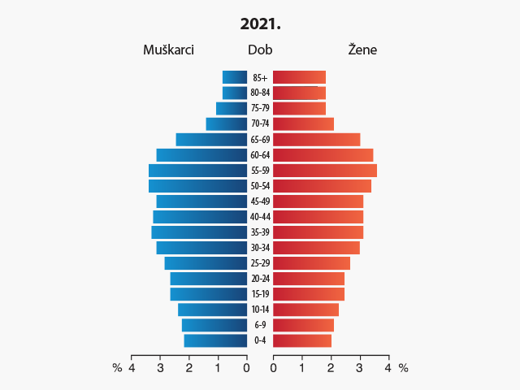

Alternativni tekst za slike
Alt-tekst pruža opis slike korisnicima koji koriste čitače ekrana. Alt-tekst treba biti kratak, ali informativan, npr. "Grafikon koji prikazuje rast prodaje".
Primjeri:
Loš primjer

Problem: Nedostatak alternativnog teksta znači da korisnici čitača ekrana ne dobivaju nikakvu informaciju o slici.
Dobar primjer
Rješenje: Opis slike daje korisne informacije korisnicima čitača ekrana, poput konteksta i svrhe slike.